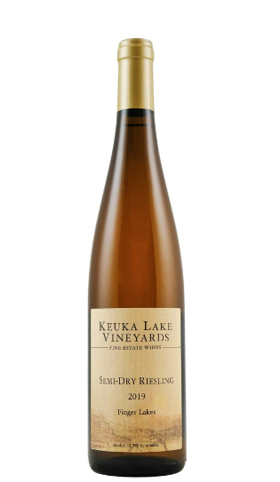

그리팅스 2021(Greetings Wine Co. 2021)
Greetings Rose은 가볍게 즐길 수 있는 맛. 예상치 못한 흥미진진한 미묘함과 산뜻한 맛을 느낄 수 있습니다.
- 원산지: 미국/포틀랜드(Oregon)
- 가격: 18000원
- 특징: 산뜻함

미올로 셀레상 로제(Miolo Seleccao Rose)
미올로 셀레상 로제(Miolo Selecao Rose)는 가볍고, 상쾌한 맛이 강한 와인입니다.
- 원산지: 남미/브라질(Campanha Gaucha)
- 가격: 19000원
- 특징: 상쾌함
콘샤 이 토로 프론테라 샤도네이(Concha Y Toro Frontera Chardonnay)
신선하고 달콤함이 가미된 프론테라 샤도네이는 큰 나무 그늘처럼 상쾌하고 단순한 즐거움을 선사합니다.
- 원산지: 남미/아르헨티나(Valle Central)
- 가격: 10000원
- 특징: 단순한 즐거움
프레시넷 뀌베 드 프레스티지(Freixenet Cuvee De Prestige)
시트러스(감귤류), 열대과일, 그리고 이스트 향이 조화를 이룹니다.
- 원산지: 유럽/스페인(Cataluna)
- 가격: 25000원
- 특징: 프레쉬하면서도 부드러운 버블이 입 안에서 기분 좋게 퍼짐
2014 카테나 자파타 샤도네이(2014 Catena Zapata 'Catena' Chardonnay)
푸른기가 도는 황금색을 띄며 바닐라, 토스트, 열대 과일, 감귤류 향을 느낄 수 있습니다.
- 원산지: 남미/아르헨티나
- 가격:
- 특징: 크리미한 잘 익은 배, 파인애플의 맛이 폭발적이며 풍성하고 부드러운 맛

코우카 레이크 비니야드(Keuka Lake Vineyards 2019)
옅은 색상과 비교적 가벼운 바디에 높은 산도, 스파이시한 맛, 붉은 과일 향이 매력적입니다.
- 원산지: 미국/뉴욕
- 가격: 30000원
- 특징: 붉은 과일 향이 풍성함